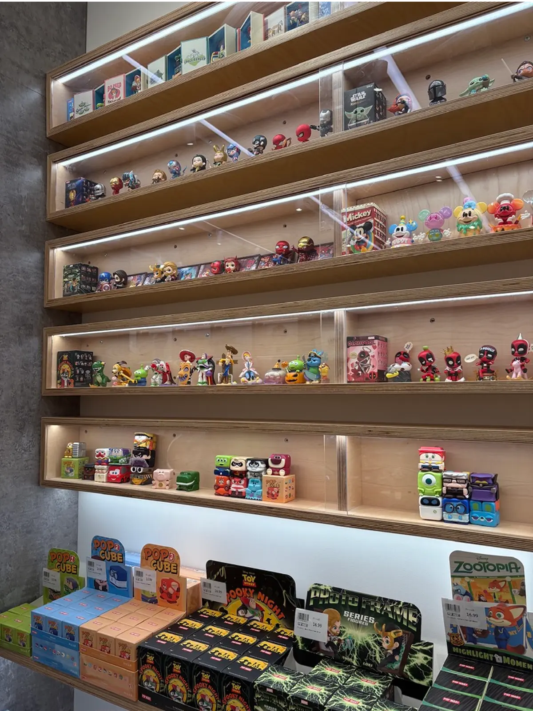
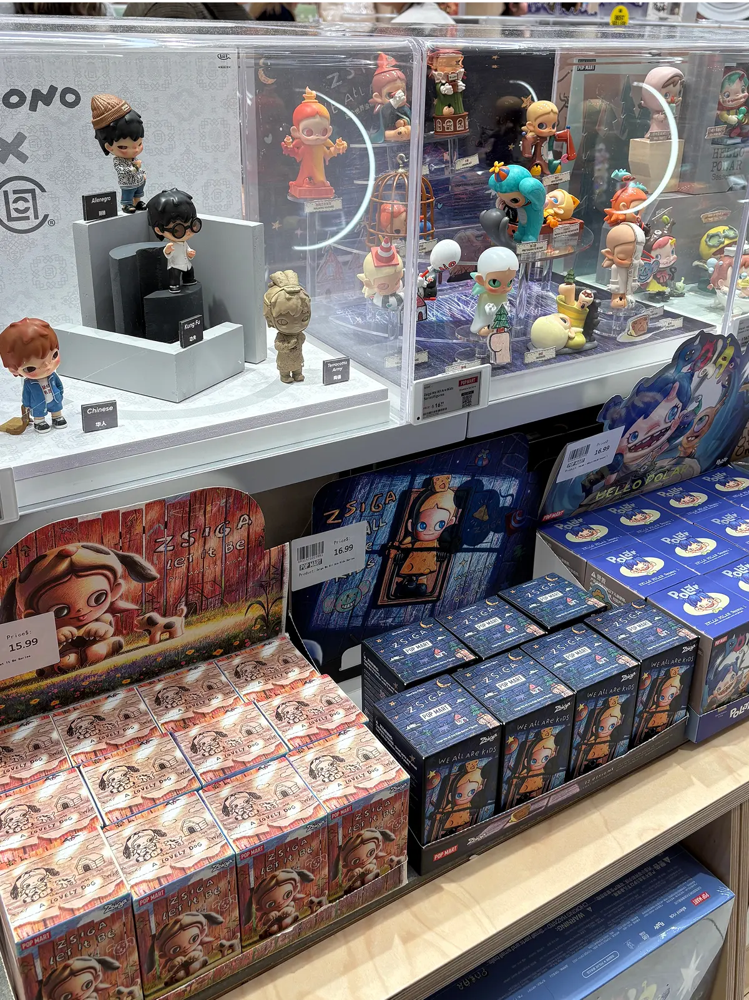
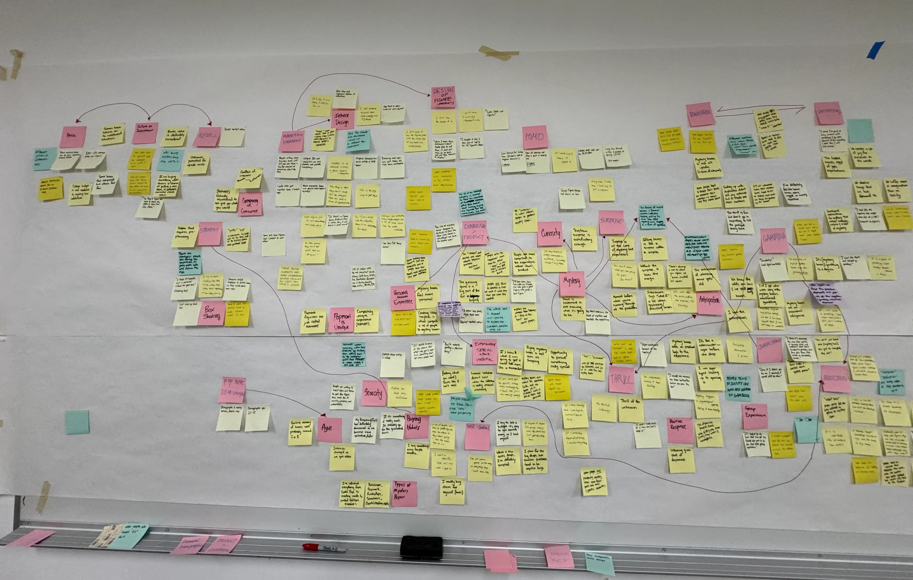

Popmore — Mystery Box Companion App
Reimagining Unboxing: A Digital Second Chance at Discovery

How might we reuse the product to let customers re-experience what they value most — the experience, not the product?
Popmore is a companion app that lets collectors relive the excitement of unboxing twice.
Core Feature #1
Personalized Collection
Users can view, showcase, and organize their figures in a digital collection space, arranging them however they like.
Core Feature #2
Claim a Digital Figure
When a user purchases a physical mystery box, they can unlock a matching digital figure in the app, giving them a second unboxing experience to relive.
Core Feature #3

Home Screen Widget
Figures can be added directly to the device's home screen as interactive widgets. Bringing the collection beyond the app and into daily life.

What is the context?
Mystery boxes are rapidly gaining popularity, with Pop Mart at the center of the surprise-driven collecting culture.
What I did
To better understand the culture around mystery boxes, I visited Pop Mart's offline store and immersed myself in the experience firsthand and interviewed 9 participants.



I then synthesized the findings using the KJ method to identify core themes.
What I discovered
I found that for many users, the true value of a mystery box lies in the excitement of unboxing rather than the item inside.
Design Opportunity
What if unboxing could happen twice: once in your hands, and again on your screen?
In Popmore, the excitement doubles with a second unboxing!
Reflection
An app isn't always the answer. Field research matters, because talking to users often reveals insights that challenge assumptions and expectations.
Disclaimer
Pop Mart characters and figures displayed in this project are the intellectual property of Pop Mart. They are included strictly for academic and illustrative purposes to demonstrate a design concept. I do not claim ownership of these assets.